Nicolas scheert hagen, snoeit en velt bomen, legt graszoden en plant nieuw groen. En waar een ladder niet meer volstaat, komt de hoogtewerker mee.
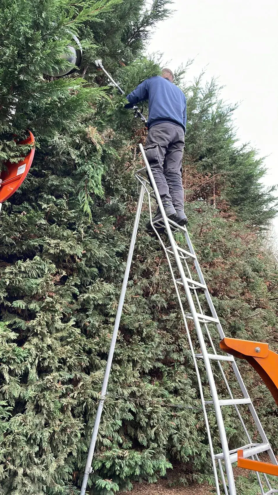
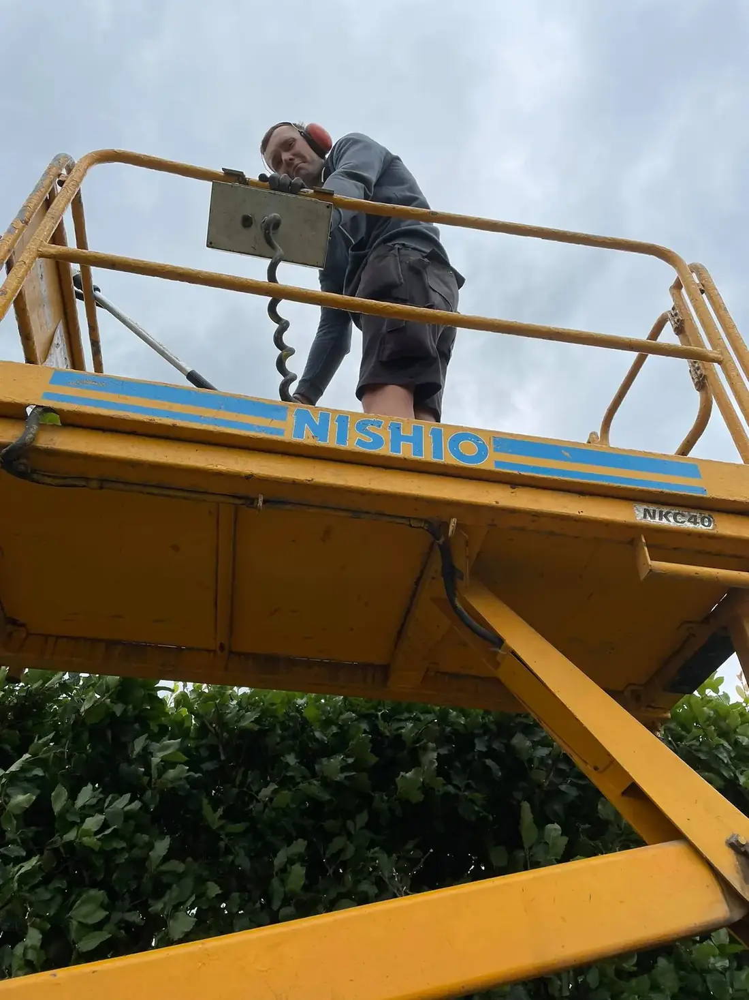
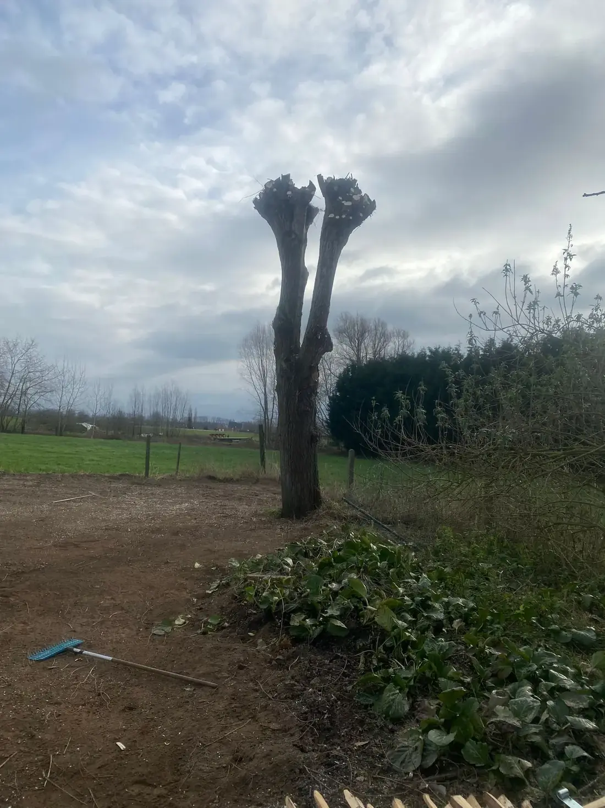
Hagen in golven of strak naast een witte gevel, buxusbollen, een nieuw gazon. Dit zijn tuinen waar Nicolas aan werkte.
Alle foto's van eigen werk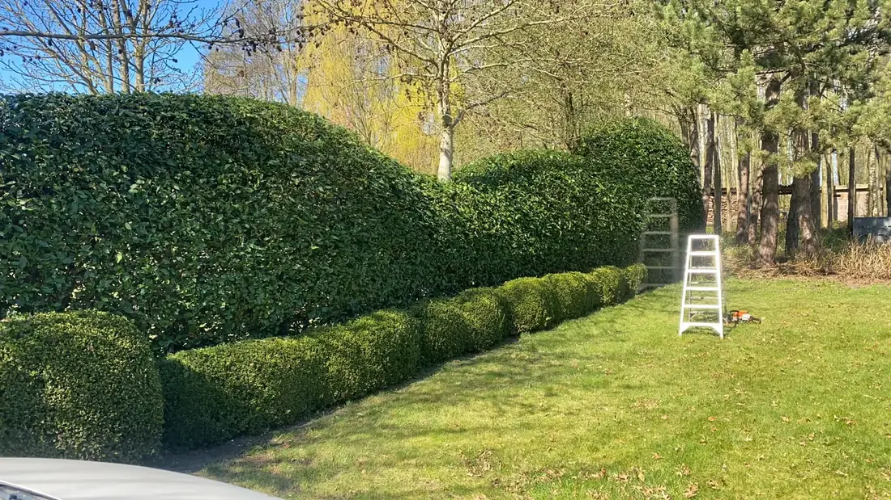
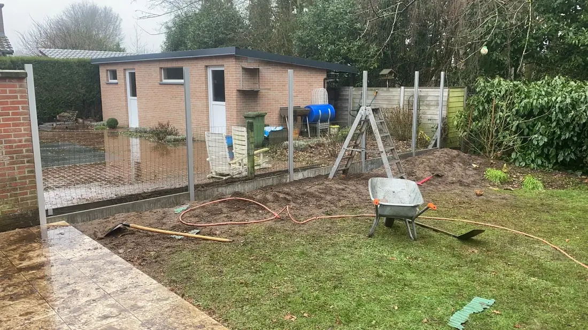
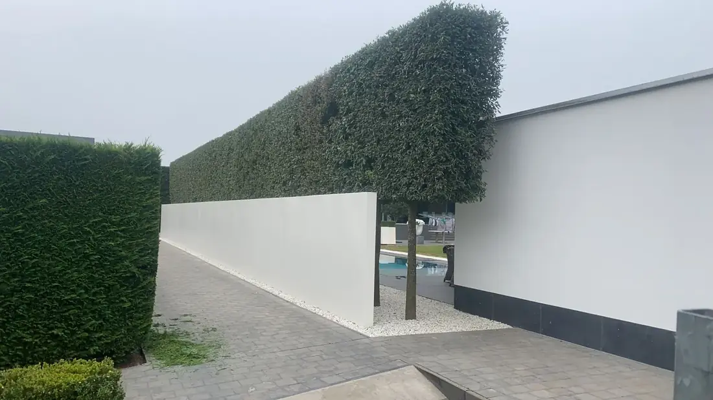
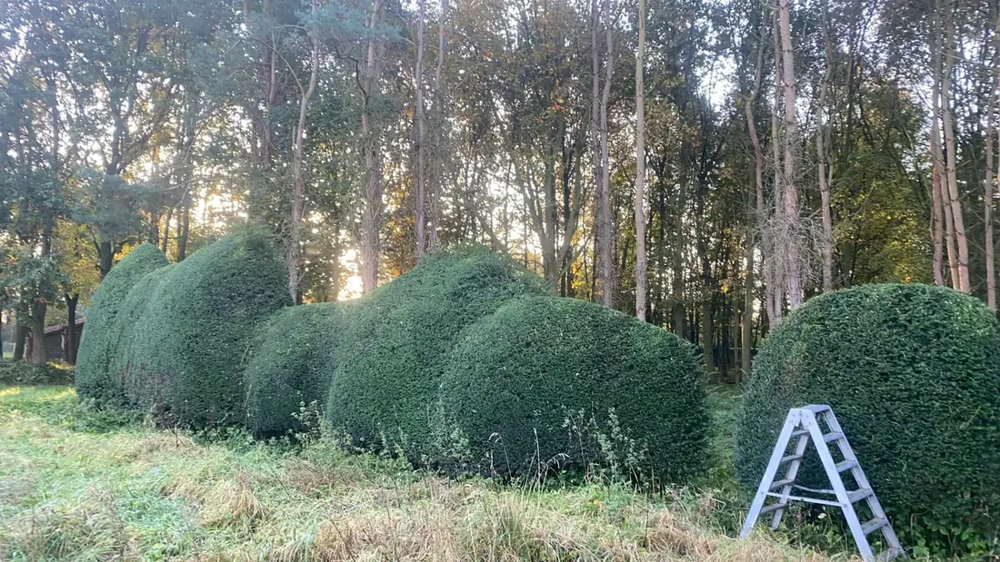
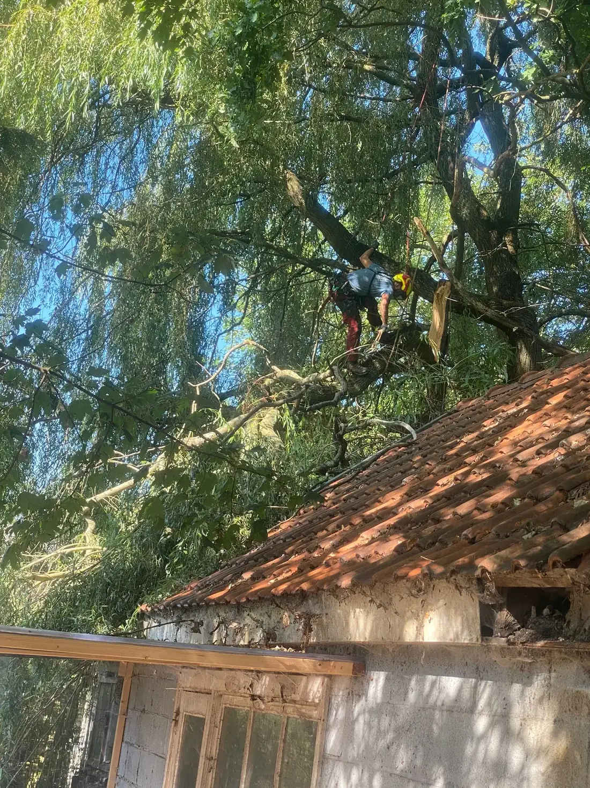
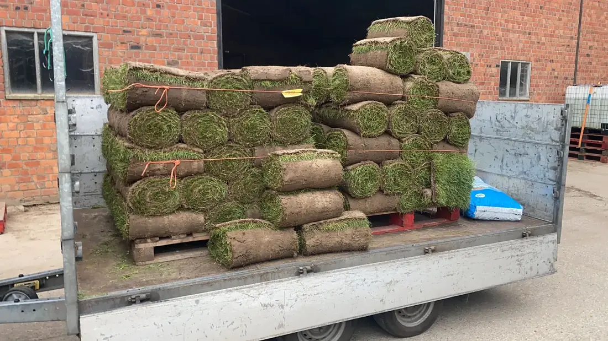
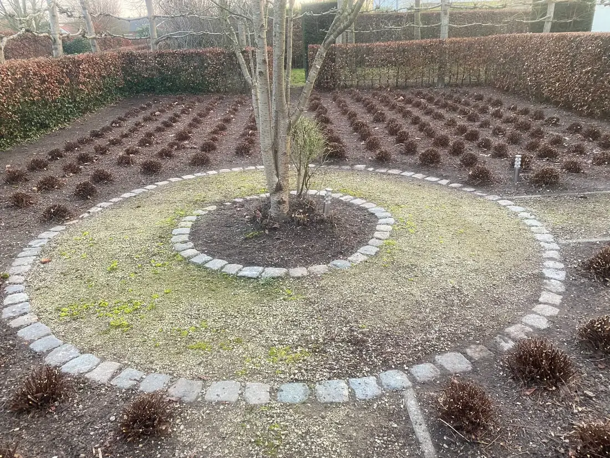
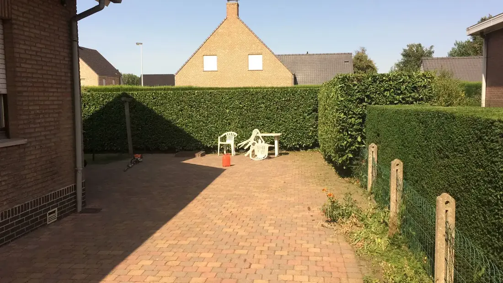
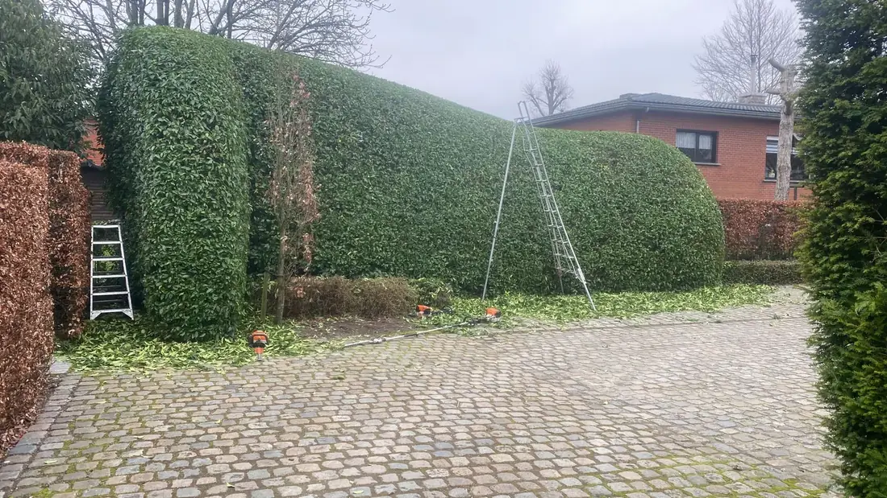
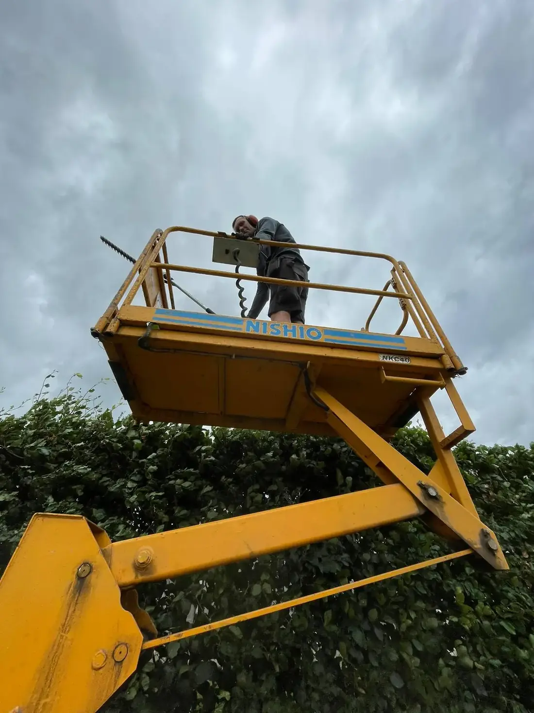
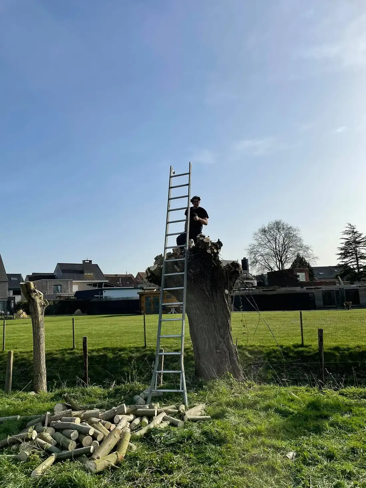
Hoge hagen en bomen laten veel mensen liever liggen, want het is zwaar en niet zonder gevaar. Voor Nicolas is het gewoon werk.
Met ladders waar het kan en de hoogtewerker waar het moet, komt hij overal bij. Ook bovenaan blijft de haag recht.
Klik op wat je nodig hebt, dan staat het in het formulier klaar.
Laag of hoog, recht of in vorm. Op tijd, zodat de haag dicht blijft.
Prijs vragenKnotten, uitdunnen of een boom die weg moet.
Prijs vragenEen nieuw gazon met graszoden, of je bestaande gras terug in orde.
Prijs vragenNieuwe hagen, struiken en borders, netjes in rijen gezet.
Prijs vragenLees wat klanten schreven over hun haag, boom of nieuw gazon.
Stuur een mail of een berichtje met een foto. Nicolas laat zo snel mogelijk iets weten.
| Maandag | 7u tot 21u |
| Dinsdag | 7u tot 21u |
| Woensdag | 7u tot 21u |
| Donderdag | 7u tot 21u |
| Vrijdag | 7u tot 21u |
| Zaterdag | 7u tot 21u |
| Zondag | Gesloten |
Ik maakte deze demo voor jullie om te tonen wat er kan. Na een kort gesprek maak ik er iets veel persoonlijkers van, helemaal naar jullie wens.
Vrijblijvend. Ik kom langs of we bellen.
Op maat, op jullie eigen domein.
Geen voorschot. Jullie betalen pas als alles klaar is.
Hosting, domeinnaam en kleine wijzigingen, zoals nieuwe openingsuren.
Omdat een voorbeeld meer zegt dan een mail. Zo zien jullie meteen wat er kan, en het kost jullie niets.
Nee. Het gesprek is vrijblijvend. Vinden jullie het niks, dan is het daarmee gedaan.
Na ons gesprek staat jullie site binnen 10 tot 14 dagen online.
Zeker. Jullie domeinnaam kan gewoon blijven, de nieuwe site komt in de plaats van de oude.
Nee, dat doe ik op basis van ons gesprek. Eigen foto's zijn mooi meegenomen, maar niet nodig om te starten.